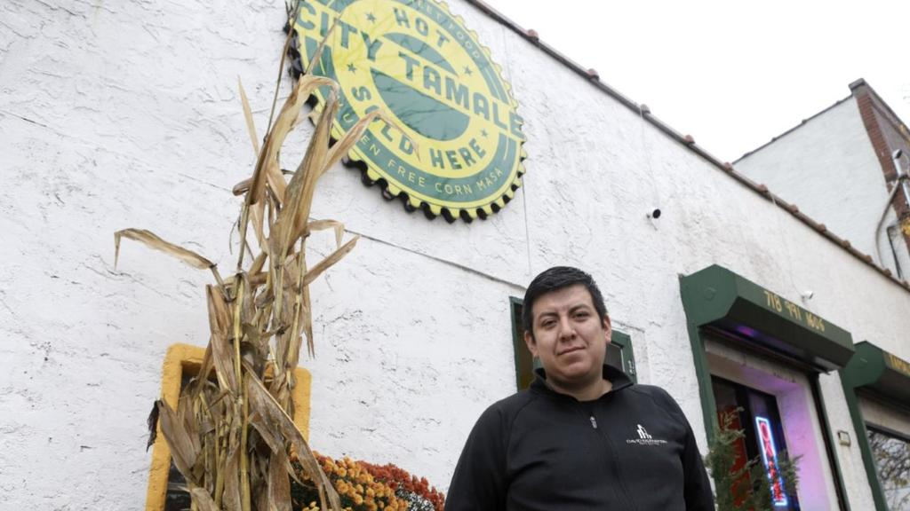

ÓSCAR MOLINA V.
City Tamale: de proyecto universitario a recomendación gastronómica del The New York Times
November 2, 2019
Univision. En Navidad, en el desayuno, en un velorio, en los viajes, las despedidas, los matrimonios. Mientras Israel Veliz vivió en Puebla con su familia, desde los cinco hasta los 15 años, los tamales nunca le faltaron. Tampoco los extrañó cuando regresó a Estados Unidos en 2004, pues su madre le enseñó a prepararlos. “Antes de esto no sabía casi nada, pero ahora me siento cocinero”, dice Veliz, de 30 años, en el interior de City Tamale, el local que abrió en 2016 y que se ha convertido en un punto culinario de referencia en el sector industrial de Hunts Point en Nueva York.
Hunts Point, entre los más insalubres
December 1, 2019

A un mes de cerrar 2019, NYC Open Data revela los datos de cuáles son las cinco principales quejas en Hunts Point según su cantidad. Las condiciones insalubres, de hecho, ocupan el cuarto lugar con 795 llamadas, mientras que en el primero están las molestias por Calefacción/Agua caliente, con 1811.
Amada: La historia de una niña transgénero
September 25, 2019

GK City. Amada nunca fue tímida ni introvertida, aunque sí hubo un momento antes de su transición —hace tres años— en que era más retraída. Las fotos recientes, en cambio, la muestran soplando burbujas y saltando alto. En un video corto, grabado en la mañana deportiva de su escuela, se la ve en la primera fila de las cheerleaders, bailando, cantando y agitando sus pompones con La Pollera Colorá a todo volumen. Ese mismo día, antes de ponerse su uniforme rojo de porrista